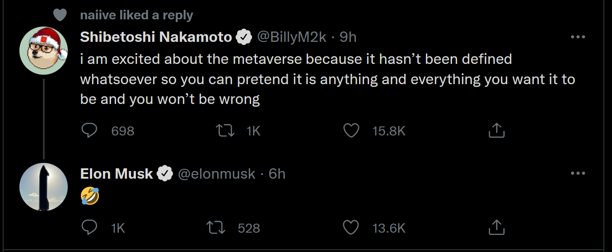
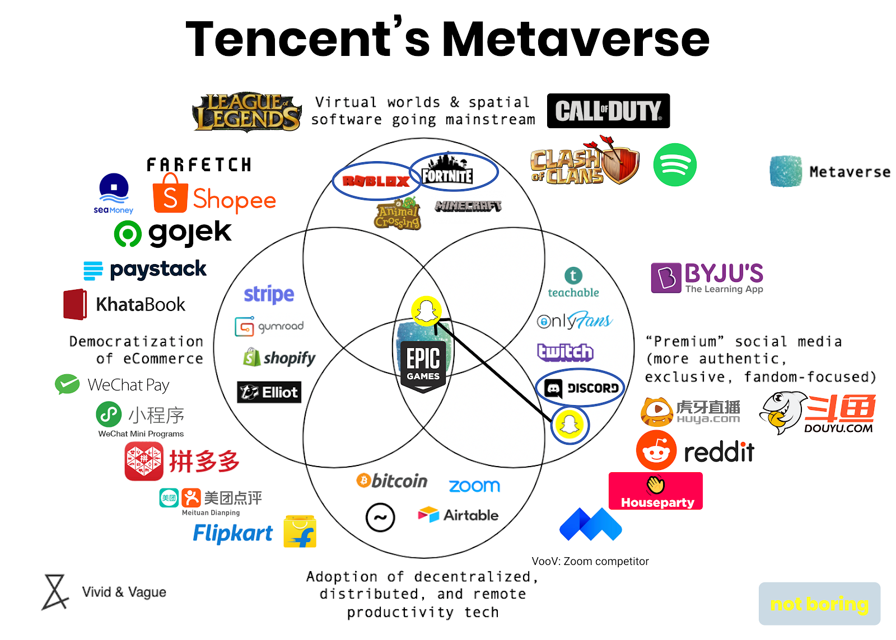
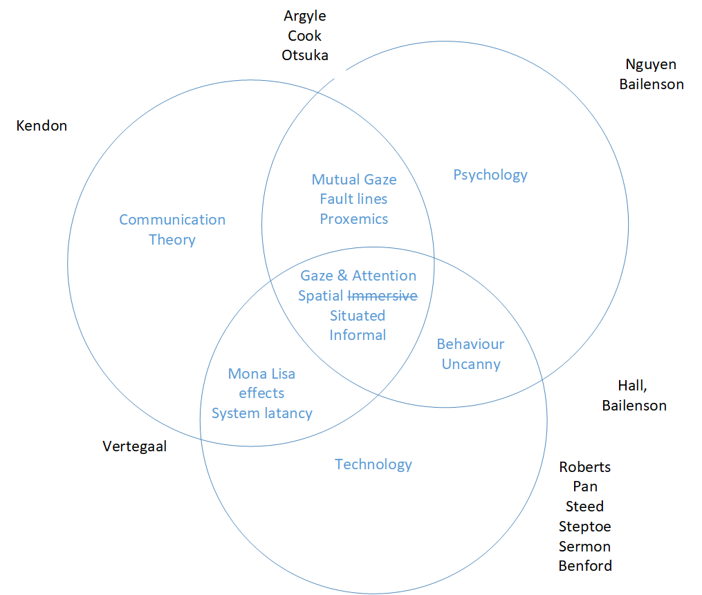

The convergence of persistent, shared virtual environments with real-time remote collaboration technologies, enabling geographically distributed participants to interact through embodied avatars, spatial audio, and shared 3D workspaces. Metaverse telecollaboration combines immersive XR hardware, low-latency networking, avatar systems, and spatial computing to replicate the social and spatial cues of co-presence across distances.
Semantic Classification
Content
-
There may be an inflection point in the organisational topology of the internet, because of trust abuses by the incumbent providers. This moment has been calling itself Web3, but the moniker is fraught with problems, and somewhat meaningless. The drivers are real.
-
The word metaverse was coined by the author Neal Stephenson in his 1992 novel Snowcrash. It started popping up soon after in news articles and research papers [158], but in the last five years it has been finding a new life within a silicon valley narrative. Perhaps in response to this Stephenson is now working with a company called Lamina1, so perhaps we have been on the right track.
-
There were clear precursors to modern social VR, such as VRML in the 1990’s which laid much of the groundwork for 3D content over networked computers.
-
It might seem that there would be a clear path from there to now, in terms of a metaverse increasingly meaning connected social virtual spaces, but this has not happened. Instead interest in metaverse as a concept waned, MMORG (described later) filled in the utility, and then recently an entirely new definition emerged. Park and Kim surveyed dozens of different historical interpretations of the word, and the generational reboot they describe makes it even less clear [[159]. The concept of the Metaverse is extremely plastic at this time.
-
Perhaps is is closer to ‘Cyberspace’ as described by William Gibson in Neuromancer [160] [“A global domain within the information environment consisting of the interdependent network of information systems infrastructures including the Internet, telecommunications networks, computer systems, and embedded processors and controllers.“]
-
`The Metaverse’ is coming, in some form, at some point. Everyone is positioning in case it’s “soon”. It’s not at all clear what it is, or if people want it, but the best of the emergent narrative looks like the older field of “digital society” and that obviously should not be dismissed lightly.
-
Park and Kim identify the generational inflection point which has led to the resurgence of the concept of Metaverse [159]: [“Unlike previous studies on the Metaverse based on Second Life, the current Metaverse is based on the social value of Generation Z that online and offine selves are not different.“]
-
Large scale `social’ & immersive metaverse is suffering poor adoption, failing as it has in the past. It’s likely that the market need has been overstated. More advanced and popular (closed) games based solutions do not serve societal or business needs.
-
Brett Leonard, writer director of Lawnmower Man talks about the pressing need to get out in front of moral questions in the development of metaverse applications. He stressed that wellbeing will be a crucial underpinning of the technology because of the inherent intimacy of immersion in virtual spaces. He suggests that emotional engagement with storied characters is needed to satisfy the human need for narrative, and that this should be utopian by design to stave off the worst of dystopian emergent characteristics of the technology.
-
Adoption and convergence requires low friction communication and economic activity, within groups, at a global scale. Cryptography and distributed software can assist us with globally ‘true’ persistence of digital data, so we will look to integrate this with our social XR. This focus on persistence, value, and trust means it’s most appropriate to focus on business uses as there is more opportunity for value creation which will be important to bootstrap this technology.
-
I think that with sufficiently informed guiding constraints in place, and smaller group sizes (ie, not a large scale social metaverse), that there is a path forward.
-
This “visual capitalist” hosted Gartner article cuts to the core of the issue. As always with such things, the numbers are likely guessed by someone with strong priors, but Gartners aren’t terrible at this stuff. The best thing about it is the extent to which it shows that the metaverse doesn’t meaningfully exist, even after ALL the hype. Metaverse is basically Roblox at this time. Hyundai having built an isolated ‘metaverse’ being a headline item is terribly exposing.
-

-
The closest contenders at this time are Roblox for social and play, VRChat for more serious users, and Nvidia Omniverse for high end business to business metaverse.
-
From a business perspective metaverse is the worst of the remote collaboration tool-kits, and undermines flow, productivity, and interpersonal trust. This hasn’t stopped Apple, Microsoft, and Meta’s heavy investment in their business technologies and marketing. Metaverse is probably technology for technologies sake at this time.
-
With that said Hennig-Thurau says the following in a LinkedIn post:
- [Our research finds that the performance of social interactions in the VR metaverse varies for different outcomes and settings, with productivity and creativity being on par with Zoom (not higher, but also not lower) for the two experimental settings in which we studied these constructs. Thus, as of today, meeting in VR does not overcome all the limitations that we are facing when using Zoom or Teams. But most importantly (to us), we find clear evidence that when people get together in the metaverse via VR, it creates SUBSTANTIALLY higher levels of social presence among group members across ALL FIVE STUDY CONTEXTS, from idea generation to joint movie going. This is the main insight from our study and the stuff we believe future uses of social virtual reality can (and should) build on. We also explain that the effectiveness of VR meetings can be further increased, and also how this can be done (by selecting the most appropriate settings, people, avatars, hardware, environments etc.).] [[161]
-
Digital society may be a more tangible and less hyped term to build around, and extends out into the more compelling spatial and augmented reality technologies, web, and digital money and trust.
-
Emerging markets, less developed nations, indeed much of the world is excluded from many of the tools that are taken for granted in `Western’ digital society. They do not necessarily have the identification, banking rails, or compute power to engage fully. Our focus is on Africa and India.
-
Uniting these attempts, with portable (transferable) “goods” across digital society possibly requires a global ledger (blockchain), indeed this is the basis of the Web3 interpretation. Crypto has undergone it’s own boom and bust cycle on this topic, and is still seeing adoption both inside out outside of the metaverse context. There are other potential options based around simpler PKI infrastructure.
-
Representations of dollars and pounds can ride securely on top of such networks as stablecoins, and this is getting easier to integrate, though there are risks. This has the potential to open up global collaborative working practices, inclusive of emerging markets.
-
Crypto is a nightmare; rife with scams, poor technology choices, limited life, and incorrect assumptions. The only thing blockchain / crypto can do well is “money like networks”, which is a cornerstone of human interaction, and the killer application. We believe that Bitcoin is the signal, and crypto is the noise, but even this is a risky proposition.
-
Industry has noted the risk, and failures of Meta across both metaverse, and digital currency, and have latched onto “open metaverse” as a narrative, to de-risk their interest. The current open metaverse is muddy and confused.
-
A truth seems to have been missed; that open metaverse should mean open source metaverse. There are some options, but they are under developed. We would like to contribute to this by applying our decades of telecollaboration research.
-
The UK seems to be endorsing significant controls and restrictions on internet usage including metaverse applications. This compliance overhead will price small companies out of large scale social experiences. Company walled gardens are less impacted (as per the slack service model), and this is an opportunity if tied to real business use cases.
-
AI & machine learning and especially generative art is further blurring these boundaries. A better term for AI/ML is supported creativity and/or augmented intelligence. While current models such as GPT3.5 and LAION based generative systems are already causing a global stir, and large language models are already forcing global debate about general AI.
-
Trust, accessibility, governance, and safeguarding, are hard problems, and made more complex by unrecorded social flow in immersive social VR. The challenge is to build a topologically flat, inclusive, permissionless, federated, and open metaverse, with economically empowered ML and AI actors, which can mediate governance issues, transparently, according to well constructed custom schemas, between cryptographically verifiable economic users (human or AI).
-
New open source [supported creativity, augmented intelligence] tooling from Stability and Llama potentially removes many of the problems with accessibility, creativity, language barriers, safeguarding, and governance. This is a huge, complex, and fast moving area, but tremendously exciting. Using new image generation ML it may be possible to build new kind of collaborative global networks for creative industries, ideating in simplistic immersive spaces while instantly creating scenes which can be stylised using verbal commands in real-time. This may open up and enfranchise fresh ideas from a wider cultural pool.
-
Such teams could be far more ad-hoc by experimenting with the designs outlined in this book. This kind of genuine digital society use case is something sorely lacking in large scale attempts such as Meta Horizons. It need not be complex or large scale, but it must be secure, trusted, and task appropriate. We think we can deliver this and conversations with the industry suggest that there is excent and cautious appetite.
-
The push toward open standards is being joined (somewhat late) by credible and established bodies like the IEEE. It’s such a fast moving and under explored set of problems that this movement toward standards will take a long time to even find it’s feet. Hopefully it’s clear to the reader that this kind of development guides the work here. In the wider “real-time social VR” various companies have attempted to build closed ecosystems, for years. These now look more like attempts at digital society, but are closer to isolated metaverses, or more usefully isolated digital ecosystems. This is still happening.
-
There’s every chance that the Apple Vision Pro will remain closed, as this tends to be their business model. Theo Priestly, CEO at Metanomics points out that Chinese Giant Tencent are doing similar, and he cited this image of building a closed but tightly linked suite of businesses into something that looks like a metaverse.
-
The levels of investment which are being hung under the metaverse moniker are mind blowing, but that is not what we want to discuss as an end point for this book.
-

-
For our purposes in this product design the interface between the previous chapter (NFTs) and this metaverse chapter is crucial. Punk6529 is a pseudonymous twitter account and thought leader in the “crypto” space. The text below encapsulates much of the reasoning that led to this book and product exploration, and is paraphrased from this thread for our purposes.
- Bit by bit, the visualization layer of the internet will get better until it is unrecognisably better (+/10 years). As the visualization layer of the internet gets better, digital objects will become more useful and more important. Avatars (2D and 3D), art, schoolwork, work work, 3D virtual spaces and hundreds of other things. Not only will the objects themselves become more important, they will lead to different emergent behaviours. We see this already with avatars and mixed eponymous/pseudonymous/anonymous communities. Yes, it is the internet plumbing underneath, but just like social media changed human behaviour on the internet, metaverse type experiences will further change it. NFT Twitter + Discord + various virtual worlds is a form of early metaverse. I feel like I am entering a different world here, not just some websites. The most important question for the health of the internet/metaverse/human society in the 2030s will be decided now. And that question is: “who stores the definitive ownership records of those digital objects”. There are two answers: a company’s database OR a blockchain. If we end up with “a company’s database” we will end up with all the web dysfunctions, but worse. SMTP is an open protocol that anyone can use so we don’t have societal level fights on “who is allowed to use email”. Short messaging online ended up becoming Twitter. So we end up having the most absurd, surreal discussions on the topic of “who is allowed to use short-messaging” being dependant on “who is the CEO of Twitter”. There is no way this is the correct architecture for our progressively more digital economy… If this is your first time around here, we are fighting for an open metaverse.”
-
It seems that industry shares much of this opinion regarding an open metaverse. The proposal of a persistent interactive digital universe online is [so] vast that major players recognise that they will not be able to monopolise this space, though Facebook/Meta are clearly attempting to. The Metaverse Standards Forum is clearly an attempt by the other industry players to catch up and then get out ahead of Meta in this regard. It’s also possible to view this as just another land grab, but through the vehicle of a standards body. Time will tell. They say:
- “Announced today, The Metaverse Standards Forum brings together leading standards organizations and companies for industry-wide cooperation on interoperability standards needed to build the open metaverse. The Forum will explore where the lack of interoperability is holding back metaverse deployment and how the work of Standards Developing Organizations (SDOs) defining and evolving needed standards may be coordinated and accelerated. Open to any organization at no cost, the Forum will focus on pragmatic, action-based projects such as implementation prototyping, hackathons, plugfests, and open-source tooling to accelerate the testing and adoption of metaverse standards, while also developing consistent terminology and deployment guidelines.”
Theoretical Framework toward metaverse Update Cycle
Problem Statement
It’s very likely that the ‘social first’ metaverse attempts such as Meta Horizons, Sandbox, and Decentraland represent failures to capture audiences. They crashed back down the hype curve as ‘Second Life’ did before them. Games based worlds such as Roblox are fairing far better, with millions of users, but it’s unclear if they have longevity, and they do not fulfil ambitions of an open metaverse. Worse yet it seems that metaverse is not the most useful way to conduct business. It is evident that there are multiple factors which contribute to successful human-human communication. These factors remain important in telecommunication supported by technology, and are variously supported, unsupported, or modified by particular technologies. Third person large scale metaverse are clearly amongst the worse of the solutions. Of particular importance is interpersonal gaze.Cook1977; @Kleinke1986; @Fagel2010 Non-verbal cues are also important across multiple modalities of sight, sound,Otsuka2005 and position of interlocutors,Kendon1967 extending to the whole body.Kleinke1986; @Nguyen2009 While formal meeting paradigms are pretty well supported by commercially deployed systems, such ICT can be expensive, may need to be professionally managed, and high end equipment in board rooms are generally booked well in advance. These meetings seem to demand many smaller supporting meetings between parties or groups of parties. The pressure here is clearly toward the now ubiquitous Teams and Zoom style formats, and these offer very poor support for social cues, and incur additional fatigue. These are known and well researched problems, and it is possible that the strategic pairing of Meta Horizons and Microsoft Teams will succeed where previous attempted have failed, or that somehow Microsoft Mesh for Teams will find and audience. They both seem to finally have the right assets and opportunity in principle. Apple also seem well positioned now, though how many users they can expect to own and work in their heavy spatial computing headset is unclear. The ‘problem’ is a supporting technology for small less formal groups,or ad-hoc groups meeting to add clarity or context to formal meetings.Metaverse allows this kind of interaction, while not seeming to replaceformal meeting utility. Metaverse also may connect home and work spaceswithout bringing in those backgrouds, creating a level playing field. Amore advanced metaverse interface could also allow dynamism andmovement, connection of natural non vocal cues, without too muchencumbering technology overhead.
Core Assumptions
Figure[fig:Framework]shows the interlocking relationships between baseline communicationwhere the participants are present, and technology which attempts tosupport across distance.

Of most interest to this research is the centre of the Venn where meeting styles which are less formal, and perhaps dynamic, may occur. Looking at these items one by one gives us our core assumptions.Gaze
Gaze is broadly agreed to be highly important for mediating flow. Mutual gaze is a rich emotional channel. The research must consider gaze. All of the researchers listed around the Venn have at some point engaged with this topic.
Attention
The non-verbal communication channel employed in ‘attention’ is assumed based upon the literature to be critical to smoothly leaving and entering a fast flowing conversation where concentration around a defined problem may be high (gesturing to a chair for instance). Again, all of the listed researchers have made reference to attention in their work.
Spatial (immersive)
Support for spatiality is important in a group setting so that directional non-verbal cues can find their target. The topic of spatial relationships between interlocutors cuts across all of the researchers, but this is not true of immersion. Immersion in a shared virtuality can certainly support the underlying requirements spatial, but the technical infrastructure required is out of scope (so this is struck through on the diagram). Roberts and Steed are the main expertise referenced even though this element is not expanded in the research.
Situated
Situated displays are those which are appropriate for their surrounding context, in this case the informal meeting. Roberts, Pan, Steed and Steptoe seem the most relevant researchers in these technology spaces.
Informal
Based on the literature proxemics is believed to be relevant in a meeting where subgroups can be instantiated and destroyed as the meeting evolves, and those where people can be invited in from outside the physical bounds of the meeting (informal spaces). Hall is the best source for this work. If it is assumed that people may come and go, and subgroups may be convened then Sermon and Benford are the best references through their work blending real and virtual spaces. This may be more consistent with less organised meetings such as those convened on demand (ad-hoc).
Peripheral Assumptions
Surrounding the centre of the Venn are additional relevant topics fromsocial science branches of theory
From verbal communication
It is assumed that the directionality of sound is important,Aoki2003and this will be engineered into the experimental design. It is assumedthat movement of the lips is an indicator and this is tied to latencyand frame rate in the vision system.
From non-verbal communication
It is assumed that eye gaze is of high importance, and that this information channel is supported by head gaze and body torque to a high degree. It is further assumed that mutual eye gaze is of less relevance in a multi party meeting where there is a common focus for attention but can be significant for turn passing. It is assumed that upper body framing and support for transmission of micro and macro gesturing is important for signalling attention in the broader group, and for message passing in subgroups.
Post ‘Meta’ metaverse
The current media around “metaverse” has been seeded by Mark Zuckerberg’s rebranding of his Facebook company to ‘Meta’, and his investment in the technology. Kraus et al suggest that this seems more a marketing and communication drive than a true shift in the company business model,kraus2022facebook but despite this Park and Kim identify dozens of recent papers of metaverse research emerging from Meta labs.park2022metaverse In Stephenson’s ‘Snow Crash’ the Hero Protagonist (drolly called Hiro Protagonist) spends much of the novel in a dystopian virtual environment called the metaverse. It is unclear if Facebook is deliberately embracing the irony of aping such a dystopian image, but certainly their known predisposition for corporate surveillance, alongside their attempt at a global digital money is ringing alarmbells,as is their currentplanfor monetisation. The second order hype is likely a speculativeplayby major companies on the future of the internet. Grayscale investmentpublished areportwhich views Metaverse as a potential trillion dollar global industry.Such industry reports are given to hyperbole, but it seems thetechnology is becoming the focus of technology investment narratives.Some notable exerts from a 2021reportby American bank JPMorgan show how the legacy financial institutions seethis opportunity: In the view of the report it“The metaverse is a seamless convergence of our physical and digital lives, creating a unified, virtual community where we can work, play, relax, transact, and socialize.” this isn’t the worst definition, and very much plays into both the value and mixed reality themes explored in this book. They agree with the industry that monetisation of assets in metaverse applications is called “Metanomics”. It’s worth seeing this word once, as it’s clearly gaining traction, but it won’t be used in this book. They make a point which is at the core of this book, that value transaction within metaverses may remove effective border controls for working globally. Be this teleoperation of robots, education, or shop fronts in a completely immersive VR world. They say: it“One of the great possibilities of the metaverse is that it will massively expand access to the marketplace for consumers from emerging and frontier economies. The internet has already unlocked access to goods and services that were previously out of reach. Now, workers in low-income countries, for example, may be able to get jobs in western companies without having to emigrate.” There is a passage which foreshadows some of the choices made in this book: it“Expanded data analytics and reporting for virtual spaces. These will be specifically designated for commercial and marketing usage and will track business key performance indicators (this already exists in some worlds, such as Cryptovoxels)”. More on this later. The report attempts to explore the web3 & cryptocurrency angles of metaverse. That’s also the aim of this book, but they have taken a much more constrained approach, ignoring the possibilities within Bitcoin. They assert that strong regulatory capture, identification, KYC/AML etc should underpin their vision of the metaverse. This is far from the community driven and organically emergent narratives that underpin Web3. This is their corporate viewpoint, something they have to say. On the back of this they pitch their consultancy services in these areas. … — working/pages/Definitions and frameworks for Metaverse.md
- There is a lot of work for the creative and technical industries to do to integrate human narrative creativity this nascent metaverse, and it’s not even completely clear that this is possible, or even what people want.
- Collaborative mixed reality---------------------------
- The Openstand principles are a great starting place for what an openmetaverse might mean. Theyare:
- Cooperation: Respectful cooperation between standards organizations, whereby each respects the autonomy, integrity, processes, and intellectual property rules of the others.
- Adherence to Principles: Adherence to the five fundamental principles of standards development:
- Due process. Decisions are made with equity and fairness among participants. No one party dominates or guides standards development. Standards processes are transparent and opportunities exist to appeal decisions. Processes for periodic standards review and updating are well defined.
- Broad consensus. Processes allow for all views to be considered and addressed, such that agreement can be found across a range of interests.
- Transparency. Standards organizations provide advance public notice of proposed standards development activities, the scope of work to be undertaken, and conditions for participation. Easily accessible records of decisions and the materials used in reaching those decisions are provided. Public comment periods are provided before final standards approval and adoption.
- Balance. Standards activities are not exclusively dominated by any particular person, company or interest group.
- Openness. Standards processes are open to all interested and informed parties.
- Collective Empowerment: Commitment by affirming standards organizations and their participants to collective empowerment by striving for standards that:
- are chosen and defined based on technical merit, as judged by the contributed expertise of each participant;
- provide global interoperability, scalability, stability, and resiliency;
- enable global competition;
- serve as building blocks for further innovation;
- contribute to the creation of global communities, benefiting humanity.
- Availability: Standards specifications are made accessible to all for implementation and deployment. Affirming standards organizations have defined procedures to develop specifications that can be implemented under fair terms. Given market diversity, fair terms may vary from royalty-free to fair, reasonable, and non-discriminatory terms (FRAND).
- Voluntary Adoption: Standards are voluntarily adopted and success is determined by the market.
- The push toward open standards is being joined (somewhat late) bycredible and established bodies like theIEEE.It’s such a fast moving and under explored set of problems that thismovement toward standards will take a long time to even find it’s feet.Hopefully it’s clear to the reader that this kind of development guidesthe work here. In the wider “real-time social VR” various companies haveattempted to build closed ecosystems, for years. These now look morelike attempts at digital society, but are closer to isolated metaverses,or more usefully isolated digital ecosystems. This is still happening.There’s every chance that when Apple make their augmented reality playthis year or next they will keep their system closed off as this tendsto be their business model. Theo Priestly, CEO at Metanomics pointsoutthat Chinese Giant Tencent are doing similar, and he cited Figure7.1;building a closed but tightly linked suite of businesses into somethingthat looks like a metaverse. The levels of investment which are beinghung under the metaverse moniker are mindblowing,but that is not what we want to discuss as an end point for this book. ![]./assets/e63f7f380108db361a71cb5cb9351e68f7c23a21.png McCormick attempts to guess the Tencent metaverse
- For our purposes in this product design the interface between theprevious chapter (NFTs) and this metaverse chapter is crucial. Punk6529is a pseudonymous twitter account and thought leader in the “crypto”space. The text below encapsulates much of the reasoning that led tothis book and product exploration, and is paraphrased from thisthread for ourpurposes.
- itBit by bit, the visualization layer of the internet will get betteruntil it is unrecognisably better (+/- 10 years). As the visualizationlayer of the internet gets better, digital objects will become moreuseful and more important. Avatars (2D and 3D), art, schoolwork, workwork, 3D virtual spaces and hundreds of other things. Not only will theobjects themselves become more important, they will lead to differentemergent behaviours. We see this already with avatars and mixedeponymous/pseudonymous/anonymous communities. Yes, it is the internetplumbing underneath, but just like social media changed human behaviouron the internet, metaverse type experiences will further change it. NFTTwitter + Discord + various virtual worlds is a form of early metaverse.I feel like I am entering a different world here, not just somewebsites. The most important question for the health of theinternet/metaverse/human society in the 2030s will be decided now. Andthat question is: “who stores the definitive ownership records of thosedigital objects”. There are two answers: a company’s database OR ablockchain. If we end up with “a company’s database” we will end up withall the web dysfunctions, but worse. SMTP is an open protocol thatanyone can use so we don’t have societal level fights on “who is allowedto use email”. Short messaging online ended up becoming Twitter. So weend up having the most absurd, surreal discussions on the topic of “whois allowed to use short-messaging” being dependant on “who is the CEO ofTwitter”. There is no way this is the correct architecture for ourprogressively more digital economy… If this is your first time aroundhere, we are fighting for an open metaverse.”
- It seems that industry shares much of this opinion regarding an openmetaverse. The proposal of a persistent interactive digital universeonline is so vast that major players recognise that they will not beable to monopolise this space, though Facebook/Meta are clearlyattempting to. The Metaverse StandardsForumis clearly an attempt by the other industry players to catch up and thenget out ahead of Meta in this regard. It’s also possible to view this asjust another land grab, but through the vehicle of a standards body.Time will tell. They say:
- it“Announced today, The Metaverse Standards Forum brings togetherleading standards organizations and companies for industry-widecooperation on interoperability standards needed to build the openmetaverse. The Forum will explore where the lack of interoperability isholding back metaverse deployment and how the work of StandardsDeveloping Organizations (SDOs) defining and evolving needed standardsmay be coordinated and accelerated. Open to any organization at no cost,the Forum will focus on pragmatic, action-based projects such asimplementation prototyping, hackathons, plugfests, and open-sourcetooling to accelerate the testing and adoption of metaverse standards,while also developing consistent terminology and deployment guidelines.”
- This looks like it will be a useful project and community for thepurposes outlined in this book, but the technology is young enough (inthat it doesn’t really exist) for multiple approaches to be trailed.
- Europe is making metaverse a priority with The Virtual and AugmentedReality IndustrialCoalition.President von der Leyen’s State of the Union letter of intentsays:“We will continue looking at new digital opportunities and trends, suchas the metaverse.”
- OpenAI identified the following 5 points about metaverse, in response tothe query “What are 5 key points I should know when studying metaverse?”
- Metaverse is a virtual reality platform that allows users to interact with each other and with digital objects in a virtual space.
- Metaverse is a decentralized platform, meaning that there is no central authority or server that controls the platform.
- Metaverse is an open platform, meaning that anyone can develop applications for the platform.
- Metaverse is a secure platform, meaning that all data and transactions are encrypted and secure.
- Metaverse is a scalable platform, meaning that it can support a large number of users and a large number of transactions.
- This is an unexpectedly great answer, probably the cleanest we havefound. The Metaverse Standard Forumhighlights the following, which reads like the output from a brainstormbetween academia and industry stakeholders.
- collaborative spatial computing
- interactive 3D graphics
- augmented and virtual reality
- photorealistic content authoring
- geospatial systems
- end-user content tooling
- digital twins
- real-time collaboration
- physical simulation
- online economies
- multi-user gaming
- new levels of scale and immersiveness.
- It’s not a useless list by any means, but it lacks the kind of productfocus we need for detailed exploration of value and trust transfer.
- Mystakidis identifies the following:mystakidis2022metaverse
- Principles
- Interoperable
- Open
- Hardware agnostic
- Network
- Technologies
- Virtual reality
- Augmented reality
- Mixed reality
- Affordances
- Immersive
- Embodiment
- Presence
- Identity construction
- Challenges
- Physical well-being
- Psychology
- Ethics
- Privacy
- This is quite an academic list. A lot of these words will be explored inthe next section which is more of an academic literature review.
- Nevelsteen attempted to identify key elements for a ‘virtual work’ in2018 and these are relevant now, and described rigorously in theappendix of his paper:nevelsteen2018virtual
- Shared Temporality, meaning that the distributed users of the virtual world share the same frame of time.
- Real time which he defines as “not turn based”.
- Shared Spatiality, which he says can include an ‘allegory’ of a space, as in text adventures. It seems this might extend to a spoken interface to a mixed reality metaverse.
- ONE Shard is a description of the WLAN network architecture, and conforms to servers in a connected open metaverse.
- Many human agents simply means that more than one person can be represented in the virtual world and corresponds to ‘social’ in our description.
- Many Software Agents corresponds to AI actors in our descriptions. Non playing characters would be the gaming equivalent.
- Virtual Interaction pertains to any ability of a user to interact actively with the persistent virtual scene, and is pretty much a given these days.
- Nonpausable isn’t even a word, but is pretty self explanatory.
- Persistence means that if human participants leave then the data of the virtual world continues. This applies to the scenes, the data representing actions, and objects and actors in the worlds.
- Avatar is interesting as it might seem that having avatar representations of connected human participants is a given. In fact the shared spaces employed by Nvidia for digital engineering do not.
- Turning to industry; John Riccitiello, CEO of Unity Technologies saysthat metaverse is it
- “The next generation of the internet that is:
- always real-time
- mostly 3D
- mostly interactive
- mostly social
- mostly persistent”
- Expanding this slightly we will us the following primitives of what wethink are important for a metaverse:
- Fusing of digital and real life
- Social first
- Real time interactive 3d graphics first
- Persistent
- Supports ownership
- Supports user generated contentondrejka2004escaping
- Open and extensible
- Low friction economic actors and actions
- Trusted / secure
- Convergence of film and games
- Blurring of IP boundaries
- Blurring of narrative flow
- Multimodal and hardware agnostic
- Mobile first experiences
- Safeguarding, and governance
- There is a lot of work for the creative and technical industries todo to integrate human narrative creativity this nascent metaverse, andit’s not even completely clear that this is possible, or even whatpeople want.
- The word metaverse was coined by the author Neal Stephenson in his 1992novel Snowcrash. It started popping up soon after in newsarticlesand research papers,mclellan1993avatars but in the last five years ithas been finding a new life within a silicon valley narrative. Perhapsin response to this Stephenson is now working with a company calledLamina1 which actually looks a lot like therest of this book, so perhaps we have been on the right track.
- There were clear precursors to modern social VR, such as VRML in the1990’swhich laid much of the groundwork for 3D content over networkedcomputers.
- It might seem that there would be a clear path from there to now, interms of a metaverse increasingly meaning connected social virtualspaces, but this has not happened. Instead interest in metaverse as aconcept waned, MMORG (described later) filled in the utility, and thenrecently an entirely new definition emerged. Park and Kim surveyeddozens of different historical interpretations of the word, and thegenerational reboot they describe makes it even lessclear.park2022metaverse The concept of the Metaverse is extremelyplastic at this time (Figure7.2).
- It’s arguable that what will be expanding in this chapter is moreappropriately ‘Cyberspace’ as described by William Gibson inNeuromancergibson2019neuromancer it“A global domain within theinformation environment consisting of the interdependent network ofinformation systems infrastructures including the Internet,telecommunications networks, computer systems, and embedded processorsand controllers.”
- Park and Kim identify the generational inflection point which has led tothe resurgence of the concept of Metaverse:park2022metaverseit“Unlike previous studies on the Metaverse based on Second Life, thecurrent Metaverse is based on the social value of Generation Z thatonline and offine selves are not different.”
- Brett Leonard, writer director of Lawnmower Man talks about the pressingneed to get out in front of moral questions in the development ofmetaverse applications. He stressed that wellbeing will be a crucialunderpinning of the technology because of the inherent intimacy ofimmersion in virtual spaces. He suggests that emotional engagement withstoried characters is needed to satisfy the human need for narrative,and that this should be utopian by design to stave off the worst ofdystopian emergent characteristics of the technology.
- The book will aim to build toward an understanding of metaverse as auseful social mixed reality, that allows low friction communication andeconomic activity, within groups, at a global scale. Cryptography anddistributed software can assist us with globally ‘true’ persistence ofdigital data, so we will look to integrate this with our social XR. Thisfocus on persistence, value, and trust means it’s most appropriate tofocus on business uses as there is more opportunity for value creationwhich will be important to bootstrap this technology.
- Elsewhere in the book we state that metaverse is the worst of thetele-collaboration tool-kits, and in general we ‘believe’ this to betrue at this time. With that said Hennig-Thurau says the following in aLinkedInpost:itOur research finds that the performance of social interactions in theVR metaverse varies for different outcomes and settings, withproductivity and creativity being on par with Zoom (not higher, but alsonot lower) for the two experimental settings in which we studied theseconstructs. Thus, as of today, meeting in VR does not overcome all thelimitations that we are facing when using Zoom or Teams. But mostimportantly (to us), we find clear evidence that when people gettogether in the metaverse via VR, it creates SUBSTANTIALLY higher levelsof social presence among group members across ALL FIVE STUDY CONTEXTS,from idea generation to joint movie going. This is the main insight fromour study and the stuff we believe future uses of social virtual realitycan (and should) build on. We also explain that the effectiveness of VRmeetings can be further increased, and also how this can be done (byselecting the most appropriate settings, people, avatars, hardware,environments etc.).hennig2022social
- We agree that with sufficiently informed guiding constraints in place,and smaller group sizes (ie, not a large scale social metaverse), thatthere is a path forward.
- This chapter will first attempt to frame the context for telepresence(the academic term for communicating through technology), and thenexplain the increasingly polarised options for metaverse. It’s useful toprecisely identify the primitives of the product we would like to seehere, so this chapter is far more a review of academic literature in thefield, culminating in a proposed framework. ![]./assets/05c60abfdb5138796c3e168be7f5b9653d60edbb.png Elon Musk agrees with this on Twitter. It’s notable that Musk is now Twitters’ biggest shareholder, and has been vocal about web censorship on the platform.
- This section has been adapted and updated for open source release, fromthe authors PhD thesis, with the permission of the University ofSalford.
- Video-conferencing has become more popular as technology improves, as itgets better integrated with ubiquitous cloud business support suites,and as a function of the global pandemic and changing work patterns.There is obviously increasing demands for real-time communication acrossgreater distances.
- The full effects of video-conferencing on human communication are stillbeing explored, as seen in the experimental “TogetherMode”within Microsoft Teams. Video-conferencing is presumed to be a somewhatricher form of communication than email and telephone, but not quite asinformative as face-to-face communication.
- In this section we look at the influence of eye contact on communicationand how video-conferencing mediates both verbal and non-verbalinteractions. Facilitation of eye contact is a challenge that must beaddressed so that video-conferencing can approach the rich interactionsof face-to-face communication. This is an even bigger problem in theemerging metaverse systems, so it’s important that we examine thehistory and trajectory.
- There is a tension emerging for companies who do not necessarily need toemploy remote meeting technology, but also cannot afford to ignore thecompetitive advantages that such systems bring. In an experimentpreformed well before the 2020 global pandemic at CTrip, Bloom et aldescribe how home working led to a 13% performance increase, of whichabout 9% was from working more minutes per shift (fewer breaks andsick-days) and 4% from more calls per minute (attributed to a quieterworking environment).Bloom2015 Home workers also reported improvedwork satisfaction and experienced less turnover, but their promotionrate conditional on performance fell. This speaks to a lack ofmanagement capability with such systemic change. It’s clearly a complexand still barely understood change within business and management.
- Due to the success of the experiment, CTrip rolled-out the option towork from home to the whole company, and allowed the experimentalemployees to re-select between the home or office. Interestingly, overhalf of them switched, which led to the gains almost doubling to 22%.This highlights the benefits of learning and selection effects whenadopting modern management practices like working from home.Increasingly this is becoming a choice issue for prospective employees,and an advantage for hiring managers to be able to offer it.
- More recent research by Barrero, Bloom and Davies found that workingfrom home is likely to be “sticky.”barrero2021working They found:
- better-than-expected WFH experiences,
- new investments in physical and human capital that enable WFH,
- greatly diminished stigma associated with WFH,
- lingering concerns about crowds and contagion risks,
- a pandemic-driven surge in technological innovations that support WFH.
- More recently Enterprise Collaboration Systems (ECS) provide richdocument management, sharing, and collaboration functionality across anorganisation. The enterprise ECS system may integrate collaborativevideo.prakash2020characteristic This is for instance the case withMicrosoft Teams / Sharepoint. This integration of ECS should beconsidered when thinking about social VR systems which wish to supportbusiness, value, and trust. It is very much the case that largetechnology providers are attempting to integrate their ‘business backend’ systems into their emerging metaverse systems. Open sourceequivalents are currently lacking.
- The ongoing global COVID-19 pandemic is changing how peoplework, towarda new global ‘normal’. Some ways of working are overdue transformation,and will be naturally disrupted. In the UK at least it seems that theremay be real appetite to shift away from old practises. This upheavalwill inevitably present both challenges and opportunities.
- Highly technical workforces, especially, can operate fromanywhere.The post pandemic world seems to have stronger national border controls,with a resultant shortage of highly technical staff. This has forced thehand of global business toward internationally distributedteams.
- If only a small percentage of companies allow the option of remoteworking, then they gain a structural advantage, enjoying benefits ofreduced travel, lower workplace infection risk across all disease, andglobal agility for the personnel. Building and estate costs willcertainly be reduced. More diversity may be possible. Issues such assexual harassment and bullying may be reduced. With reduced overheadsproduct quality may increase. If customers are happier with theirservices, then over time this ‘push’ may mean an enormous shift awayfrom centralised working practises toward distributed working.
- Technologies which support this working style were still in theirinfancy at the beginning of the pandemic. The rush to ‘Zoom’, apreviously relatively unknown and insecureaiken2020zooming webmeeting product, shows how naive businesses were in this space.
- Connection of multiple users is now far better supported, with Zoom andMircosoftTeamsalone supporting hundreds of millions of chats a day. This is a 20xincrease on market leader Skype’s 2013 figure of 280millionconnections per month. Such technologies extend traditional telephony toprovide important multi sensory cues. However, these technologiesdemonstrate shortfalls compared to a live face-to-face meeting, which isgenerally agreed to be optimal for human-human interaction.Wolff2008
- KPMG surveyed U.S. CEOs from companies with over $500 million in revenue, finding that only one-third anticipate a full office return in the next three years.
- A drastic shift from last year’s outlook where 62% believed remote work would end by 2026, as detailed in this Fortune article.
- The trend towards hybrid work models is growing, with nearly half of the CEOs supporting this flexible arrangement, up from 34% last year. Corporate Resistance and Work Model Evolution
- Deutsche Bank and Amazon faced significant resistance to their return-to-office mandates, with Deutsche Bank staff voicing displeasure internally, and 30,000 Amazon employees signing a petition against the in-office requirements.
- Research indicates that nearly half of companies enforcing office returns observed increased employee attrition, supporting a shift towards hybrid models as a middle ground solution.
- Insights from Amrit Sandhar of &Evolve and Lewis Maleh of Bentley Lewis highlight the ongoing transition to more flexible work arrangements. Maleh notes a significant rise in job postings for remote or hybrid roles, underscoring a broader acceptance of flexibility in work environments as crucial for attracting and retaining talent.
- While the research community and business are learning how to adaptworking practises to web based telepresence,oeppen2020human thereremains little technology support for ad-hoc serendipitous meetingsbetween small groups. It’s possible that Metaverse applications can helpto fill this gap, by gamification of social spaces, but the underdiscussed problems with video conferencing are likely to be even worsein such systems.
- Chris Herd of “FirstBase” (who admittedly have a bias) provides somefascinating speculations:
- it
- “I’ve spoken to 2,000+ companies with 40M+ employees about remote workin the last 12 months A few predictions of what will happen before 2030:
- Rural Living: World-class people will move to smaller cities, have a lower cost of living & higher quality of life.
- These regions must innovate quickly to attract that wealth. Better schools, faster internet connections are a must.
- Async Work: Offices are instantaneous gratification distraction factories where synchronous work makes it impossible to get stuff done.
- Tools that enable asynchronous work are the most important thing globally remote teams need. A lot of startups will try to tackle this.
- Hobbie Renaissance: Remote working will lead to a rise in people participating in hobbies and activities which link them to people in their local community.
- This will lead to deeper, more meaningful relationships which overcome societal issues of loneliness and isolation.
- Diversity & Inclusion: The most diverse and inclusive teams in history will emerge rapidly Companies who embrace it have a first-mover advantage to attract great talent globally. Companies who don’t will lose their best people to their biggest competitors.
- Output Focus: Time will be replaced as the main KPI for judging performance by productivity and output.
- Great workers will be the ones who deliver what they promise consistently
- Advancement decisions will be decided by capability rather than who you drink beer with after work.
- Private Equity: The hottest trend of the next decade for private equity will see them purchase companies, make them remote-first The cost saving in real-estate at scale will be eye-watering. The productivity gains will be the final nail in the coffin for the office Working Too Much: Companies worry that the workers won’t work enough when operating remotely.
- The opposite will be true and become a big problem.
- Remote workers burning out because they work too much will have to be addressed.
- Remote Retreats: Purpose-built destinations that allow for entire companies to fly into a campus for a synchronous week.
- Likely staffed with facilitators and educators who train staff on how to maximize effectiveness.
- Life-Work Balance: The rise of remote will lead to people re-prioritizing what is important to them.
- Organizing your work around your life will be the first noticeable switch. People realizing they are more than their job will lead to deeper purpose in other areas.
- Bullshit Tasks: The need to pad out your 8 hour day will evaporate, replaced by clear tasks and responsibilities.
- Workers will do what needs to be done rather than wasting their trying to look busy with the rest of the office
- ”
- O’Malley et al. showed that face-to-face and video mediated employedvisual cues for mutual understanding, and that addition of video to theaudio channel aided confidence and mutual understanding. However, videomediated did not provide the clear cues of beingco-located.OMalley1996
- Dourish et al. make a case for not using face-to-face as a baseline forcomparison, but rather that analysis of the efficacy of remotetele-collaboration tools should be made in a wider context of connectedmultimedia tools and ‘emergent communicative practises.’Dourish1996While this is an interesting viewpoint it does not necessarily map wellto a recreation of the ad-hoc meeting.
- There is established literature on human sensitivity to eye contact inboth 2D and 3D VC,Criminisi2003; @Van_Eijk2010 with an acceptedminimum of 5-10 degrees before observers can reliably sense they are notbeing looked at.Chen2002 Roberts et al. suggested that at the limitof social gaze distance ( 4m) the maximum angular separation betweenpeople standing shoulder to shoulder in the real world would be around 4degreesRoberts2013.
- Sellen found limited impact on turn passing when adding a visual channelto audio between two people when using Hydra, an early system whichprovided multiple video conference displays in an intuitive spatialdistributionSellen1992. She did however, find that the design of thevideo system affected the ability to hold multi-partyconversations.Sellen1995
- Monk and Gale describe in detail experiments which they used forexamining gaze awareness in communication which is mediated andunmediated by technology. They found that gaze awareness increasedmessage understanding.Monk2002
- Both Kuster et al. and Gemmel et al. have successfuly demonstratedsoftware systems which can adjust eye gaze to correct for off axiscapture in real time video systemsGemmell2000; @Kuster2012.
- Shahid et al. conducted a study on pairs of children playing games withand without video mediation and concluded that the availability ofmutual gaze affordance enriched social presence and fun, while itsabsence dramatically affects the quality of the interaction. They usedthe ‘Networked Minds’, a social presence questionnaire.
- Early enthusiasm in the 1970’s for video conferencing, as a medium forsmall group interaction quickly turned to disillusionment. It was agreedafter a flurry of initial research that the systems at the time offeredno particular advantage over audio only communication, and atconsiderable cost.Williams1977
- Something in the breakdown of normal visual cues seems to impact theability of the technology to support flowing group interaction.Nonetheless, some non-verbal communication is supported in VC withlimited success.
- Additional screens and cameras can partially overcome the limitation ofno multi-party support (that of addressing a room full of people on asingle screen) by making available more bidirectional channels. Forinstance, every remote user can be a head on a screen with acorresponding camera. The positioning of the screens must thennecessarily match the physical organization of the remote room.
- Egido provides an early review of the failure of VC for group activity,with the “misrepresentation of the technology as a substitute forface-to-face” still being valid today.Edigo1988
- Commercial systems such as Cisco Telepresence Rooms cluster theircameras above the centre screen of three for meetings using theirtelecollaboration product, while admitting that this only works well forthe central seat of the three screens. They also group multiple peopleon a single screen in what Workhoven et al. dub a “non-isotropic”configuration.Pejsa2016 They maintain that this is a suitable tradeoff as the focus of the meeting is more generally toward the importantcontributor in the central seat. This does not necessarily follow forless formal meeting paradigms.
- In small groups, it is more difficult to align non-verbal cues betweenall parties, and at the same time, it is more important because thehand-offs between parties are more numerous and important in groups. Abreakdown in conversational flow in such circumstances is harder tosolve. A perception of the next person to talk must be resolved for allparties and agreed upon to some extent.
- However, most of the conventional single camera, and expensive multicamera VC systems, suffer a fundamental limitation in that the offsetbetween the camera sight lines and the lines of actual sight introduceincongruities that the brain must compensate for.Wolff2008
- There have been many attempts to support group working and rich datasharing between dispersed groups in a business setting. So called ’smartspaces’ allow interaction with different displays for differentactivities and add in some ability to communicate with remote or evenmobile collaborators on shared documents,Bardram2012 with additionalchallenges for multi-disciplinary groups who are perhaps less familiarwith one or more of the technology barriers involved.Adamczyk2007
- Early systems like clearboardIshii1993 demonstrated the potential forsmart whiteboards with a webcam component for peer-to-peer collaborativeworking. Indeed it is possible to support this modality with Skype and asmartboard system (and up to deployments such as Accessgrid). Theyremain relatively unpopular however.
- Almost all traditional group video meeting tools suffer from theso-called Mona Lisa effect which describes the phenomenon where theapparent gaze of a portrait or 2 dimensional image always appears tolook at the observer regardless of the observer’sposition.Vishwanath2005; @Anstis1969; @Wollaston1824 This situationmanifests when the painted or imaged subject is looking into the cameraor at the eyes of the painter.Loomis2008; @Fullwood2006
- Single user-to-user systems based around bidirectional video implicitlyalign the user’s gaze by constraining the camera to roughly the samelocation as the display. When viewed away from this ideal axis, itcreates the feeling of being looked at regardless of where this observeris,Moubayed2012; @Vishwanath2005; @Anstis1969; @Wollaston1824 or the“collapsed view effect”Nguyen2005 where perception of gazetransmitted from a 2 dimensional image or video is dependent on theincidence of originating gaze to the transmission medium.
- Multiple individuals using one such channel can feel as if they arebeing looked at simultaneously, leading to a breakdown in the normalnon-verbal communication which mediates turn passing.Vertegaal2002There is research investigating this sensitivity when the gaze ismediated by a technology, finding that “disparity between the opticalaxis of the camera and the looking direction of a looker should be atmost 1.2 degrees in the horizontal direction, and 1.7 degrees invertical direction to support eye contact”.Van_Eijk2010; @Bock2008 Itseems that humans assume that they are being looked at unless they aresure that they are not.Chen2002
- To be clear, there are technological solutions to this problem, but it’suseful in the context of discussing metaverse to know that this problemexists. It’s known that there are cognitive dissonances around panes ofvideo conference images, but it seems that the effect is truely limitedto 2D surfaces. A 3D projection surface (a physical model of a human)designed to address this problem completely removed the Mona Lisaeffect.Moubayed2012
- Metaverse then perhaps offers the promise of solving this, making morenatural interaction possible, but it’s clearly a long way fromdelivering on those promises right now. We need to understand what’simportant and try to map these into a metaverse product.
- The ubiquitous technology to mediate conversation is, of course, thetelephone. The 2021 Ericsson mobilityreportstates that there are around 8 billion mobile subscriptions globally.More people have access to mobile phones than to working toiletsaccording toUNICEF.
- Joupii and Pan designed a system which focused attention on spatiallycorrect high definition audio. They found “significant improvement overtraditional audio conferencing technology, primarily due to theincreased dynamic range and directionality..Jouppi2002 Aoki et al.also describe an audio only system with support for spatialcues.Aoki2003
- In the following sections we will attempt to rigorously identify justwhat is important for our proposed application of business centriccommunication, supportive of trust, and thereby value transfer.
- In his book ‘Bodily Communication’Argyle1988 Michael Argyle dividesvocal signals into the following categories:
-
- Verbal
-
- Non-Verbal Vocalisations
-
- Linked to Speech
-
- Prosodic
-
- Synchronising
-
- Speech Disturbances
-
- Independent of Speech
-
- Emotional Noises
-
- Paralinguistic (emotion and interpersonal attitudes)
-
- Personal voice and quality of accent
- Additional to the semantic content of verbal communication there is arich layer of meaning in pauses, gaps, and overlapsHeldner2010 whichhelp to mediate who is speaking and who is listening in multi-partyconversation. This mediation of turn passing, to facilitate flow, is byno means a given and is highly dependent on context and otherfactors.Kleinke1986 Interruptions are also a major factor in turnpassing.
- This extra-verbal contentTing-Toomey2012 extends into physical cues,so-called ‘nonverbal’ cues, and there are utterances which link theverbal and non-verbal.Otsuka2005 This will be discussed later, but toan extent, it is impossible to discuss verbal communication withoutregard to the implicit support which exists around the words themselves.
- In the context of all technology-mediated conversation the extra-verbalis easily compromised if technology used to support communication over adistance does not convey the information, or conveys it badly. This canintroduce additional complexity.Otsuka2005
- These support structures are pretty much lacking in metaverse XRsystems. The goal then here perhaps is to examine the state-of-the-art,and remove as many of the known barriers as possible. Such a processmight better support trust, which might better support the kind ofeconomic and activity we seek to engineer.
- When examining just verbal / audio communication technology it can beassumed that the physical non-verbal cues are lost, though notnecessarily unused. In the absence of non-verbal cues it falls to timelyvocal signals to take up the slack when framing and organising the turnpassing. For the synchronising of vocal signals between the parties tobe effective the systemic delays must remain small. System latency, theinherent delays added by the communication technology, can allow slipsor a complete breakdown of ’flow’.katagiri2007aiduti This problem canbe felt in current social VR platforms, though people don’t necessarilyidentify the cause of the breakdown correctly. In the main they feel tothe users like a bad “audio-only” teleconference.
- With that said, the transmission of verbal / audio remains the mostcritical element for interpersonal communication as the most essentialmeaning is encoded semantically. There is a debate about ratios of howmuch information is conveyed through the various humanchannels,Loomis2012 but it is reasonable to infer from its ubiquitythat support for audio is essential for meaningful communication over adistance. We have seen that it must be timely, to prevent a breakdown offraming, and preferably have sufficient fidelity to convey sub-vocalutterances.
- For social immersive VR for business users, a real-time network such aswebsockets, RTP, or UDP seems essential, much better microphones areimportant, and the system should support both angular spatialisation,and respond to distance between interlocutors.
- We have already seen that verbal exchanges take place in a wider contextof sub vocal and physical cues. In addition, the spatial relationshipbetween the parties, their focus of attention, their gestures andactions, and the wider context of their environment all play a part incommunication.Goodwin2000 These are identified as follows by Gilliesand SlaterGillies2005 in their paper on virtual agents.
- Posture and gesture
- Facial expression
- Gaze
- Proxemics
- Head position and orientation
- Interactional synchrony
- This is clearly important for our proposed collaborative mixed realityapplication. Below we will examine these six areas by looking across thewider available research.
Gaze
- Of particular importance is judgement of eye gaze which is normallyfast, accurate and automatic, operating at multiple levels of cognitionthrough multiplecues.Argyle1988; @Argyle1976; @Argyle1965; @Argyle1976; @Argyle1969; @Kendon1967; @Monk2002
- Gaze in particular aids smooth turn passingHedge1978Novick1996 andlack of support for eye gaze has been found to decrease the efficiencyof turn passing by 25%.Vertegaal2000
- There are clear patterns to eye gaze in groups, with the person talking,or being talked to, probably also being lookedatVertegaal2001Langton2000. To facilitate this groups will tend toposition themselves to maximally enable observation of the gaze of theother parties.Kendon1967 This intersects with proxemics which will bediscussed shortly. In general people look most when they are listening,with short glances of 3-10 seconds.Argyle1965 Colburn et al. suggestthat gaze direction and the perception of the gaze of others directlyimpacts social cognitionColburn2000 and this has been supported in afollow up study.Macrae2002
- The importance of gaze is clearly so significant in evolutionary termsthat human acuity for eye direction is considered high at 30 secarcSymons2004 with straight binocular gaze judged more accuratelythan straight monocular gaze,Kluttz2009 when using stereo vision.
- Regarding the judgement of the gaze of others, Symons et al. suggestedthat “people are remarkably sensitive to shifts in a person’s eye gaze”in triadic conversation.Symons2004 This perception of the gaze ofothers operates at a low level and is automatic. Langton et al. citeresearch stating that the gaze of others is “able to trigger reflexiveshifts of an observer’s visual attention” and further discuss the deepbiological underpinnings of gaze processing.Langton2000
- When discussing technology-mediated systems, Vertegaal & Ding suggestedthat understanding the effects of gaze on triadic conversation is“crucial for the design of teleconferencing systems and collaborativevirtual environments,”Vertegaal2002 and further found correlationbetween the amount of gaze, and amount of speech. Vertegaal & Slagtersuggest that “gaze function(s) as an indicator of conversationalattention in multiparty conversations.”Vertegaal2001 It seems like iswe are to have useful markets within social immersive environments thensupport for natural gaze effects should be a priority.
- Wilson et al. found that subjects can “discriminate gaze focused onadjacent faces up to [3.5m].”Wilson2000 This perhaps gives us atestable benchmark within a metaverse application which is eye gazeenabled. In this regard Schrammel et al. investigated to what extentembodied agents can elicit the same responses in eye gazedetection.Schrammel2007
- Vertegaal et al. found that task performace was 46% better when gaze wassynchronised in their telepresence scenario. As they point out, gazesynchonisation (temporal and spatial) is ‘commendable’ in all such groupsituations, but the precise utility will depend upon thetask.Vertegaal2002
- There has been some success in the automatic detection of the focus ofattention of participants in multi partymeetings.Stiefelhagen2001; @Stiefelhagen2002 More recently, eyetracking technologies allow the recording and replaying of accurate eyegaze informationSteptoe2009 alongside information about pupildilation toward determination of honesty and socialpresence.Steptoe2010 It seems there are trust and honesty issuesconflated with how collaborants in a virtual space are represented.
- In summary, gaze awareness does not just mediate verbal communicationbut rather is a complex channel of communication in its own right.Importantly, gaze has a controlling impact on those who are involved inthe communication at any one time, including and excluding even beyondthe current participants. Perhaps the systems we propose in this bookneed to demand eye gaze support, but it is clear that it should berecommended, and that the software selected should support thetechnology integration in principle.
Mutual Gaze
- Aygyle and Cook established early work around gaze and mutual gaze, withtheir seminal book of the same title,Argyle1976 additionallydetailing confounding factors around limitations and inaccuracies inobservance of gaze and how this varies withdistance.Argyle1969; @Argyle1988; @Cook1977
- Mutual gaze is considered to be the most sophisticated form of gazeawareness with significant impact on dyadic conversationespecially.Cook1977; @Kleinke1986; @Fagel2010 The effects seem moreprofound than just helping to mediate flow and attention, with mutualeye gaze aiding in memory recall and the formation ofimpressions.Bohannon2013
- While reconnection of mutual eye gaze through a technology boundary doesnot seem completely necessary it is potentially important, with impacton subtle elements of one-to-one communication, and thereforediscrimination of eye gaze direction should be bi-directional ifpossible, and if possible have sufficient accuracy to judge direct eyecontact. In their review Bohannon et al. said that the issue ofrejoining eye contact must be addressed in order to fully realise therichness of simulating face-to-face encounters.Bohannon2013
- Mutual gaze is a challenging affordance as bi-directional connection ofgaze is not a trivial problem. It’s perhaps best to view this as at the‘edge’ of our requirements for a metaverse.
Mutual Gaze in Telepresence
- We have seen that transmission of attention can broadly impactcommunication in subtle ways, impacting empathy, trust, cognition, andco-working patterns. Mutual gaze (looking into one another’s eyes), iscurrently the high water mark for technology-mediated conversation.
- Many attempts have been made to re-unite mutual eye gaze when usingtele-conferencing systems. In their 2015 review of approachesRegenbrecht and Langlotz found that none of the methods they examinedwere completely ideal.Regenbrecht2015 They found most promise in 2Dand 3D interpolation techniques, which will be discussed in detaillater, but they opined that such systems were very much ongoing researchand lacked sufficient optimisation.
- A popular approach uses the so called ’Peppers Ghost’phenomenon,Steinmeyer2013 where a semi silvered mirror presents animage to the eye of the observer, but allows a camera to view throughfrom behind the angled mirror surface. The earliest example of this isRosental’s two way television system in 1947,Rosenthal1947 thoughBuxton et al. ‘Reciprocal Video Tunnel’ from 1992 is more oftencited.Buxton1992 This optical characteristic isn’t supported byretroreflective projection technology, and besides requires carefulcontrol of light levels either side of the semi-silvered surface.
- The early GAZE-2 system (which makes use of Pepper’s ghost) is novel inthat it uses an eye tracker to select the correct camera from severaltrained on the remote user. This ensures that the correct returned gaze(within the ability of the system) is returned to the correct user onthe other end of the network.Vertegaal2003 Mutual gaze capability islater highlighted as an affordance supported or unsupported by keyresearch and commercial systems.
Head Orientation
- Orientation of the head (judged by the breaking of bilateral symmetryand alignment of nose) is a key factor when judging attention.Perception of head orientation can be judged to within a couple ofdegrees.Wilson2000
- It has been established that head gaze can be detected all the way outto the extremis of peripheral vision, with accurate eye gaze assessmentonly achievable in central vision.Loomis2008 This is less of use forour metaverses at this time, because user field of view is almost alwaysrestricted in such systems. More usefully, features of illumination canalter the apparent orientation of the head.Troje1998
- Head motion over head orientation is a more nuanced propostion and canbe considered a micro gesture.Boker2011 Head tracking systems withinhead mounted displays can certainly detect these tiny movements, butit’s clear that not all of this resolution is passed into shared virtualsettings through avatars. It would be beneficial to be able to fine tunethis feature within any software selected.
- It is possible that 3D displays are better suited to perception of headgaze since it is suggested that they are more suitable for “shapeunderstanding tasks”St_John2001
- Bailenson, Baell, and Blascovich found that giving avatars rendered headmovements in a shared virtual environment decreased the amount oftalking, possibly as the extra channel of head gaze was opened up. Theyalso reported that subjectively, communication wasenhanced.Bailenson2002
- Clearly head orientation is an important indicator of the direction ofattention of members of a group and can be discerned even in peripheralvision. This allows the focus of several parties to be followedsimultaneously and is an important affordance to replicate on anymulti-party communication system.
Combined Head and Eye Gaze
- Rienks et al. found that head orientation alone does not provide areliable cue for identification of the speaker in a multipartysetting.Rienks2010 Stiefelhagen & Zhu found “that head orientationcontributes 68.9% to the overall gaze direction onaverage,”Stiefelhagen2002 though head and eye gaze seem to be judgedinterdependently.Kluttz2009 Langton noted that head and eye gaze are“mutually influential in the analysis of socialattention,”Langton2000 and it is clear that transmission of ‘headgaze’ by any mediating system, enhances rather than replaces timelydetection of subtle cues. Combined head and eye gaze give the best ofboth worlds and extend the lateral field of view in which attention canbe reliably conveyed to others.Loomis2008
Other Upper Body: Overview
- While it is well evidenced that there are advantages to accurateconnection of the gaze between conversationalpartners,Argyle1969; @Kleinke1986 there is also a body of evidencethat physical communication channels extend beyond thefaceKleinke1986; @Nguyen2009 and include both micro (shrugs, handsand arms), and macro movement of the upper body.Ekman1993Goldin-Meadow suggests that gesturing aids conversational flow byresolving mismatches and aiding cognition.Goldin-Meadow1999
- In their technology-mediated experiment which compared face to upperbody and face on a flat screen, Nguyen and Canny found that “upper-bodyframing improves empathy measures and gives results not significantlydifferent from face-to-face under several empathymeasures.”Nguyen2009
- The upper body can be broken up as follows:
- bfFacial Much emotional context can be described by facial expression (display)alone,Ekman1993; @Chovil1991 with smooth transition betweenexpressions seemingly important.schiano2004 This suggests thatmediating technologies should support high temporal resolution, or atleast that there is a minimum resolution between which transitionsbetween expressions become too ’categorical’. Some aspects ofconversational flow appear to be mediated in part by facialexpression.ohba1998 There are gender differences in the perception offacial affect.Hofmann2006
- bfGesturing (such as pointing at objects) paves the way for more complex channels ofhuman communication and is a basic and ubiquitous channel.Iverson2005Conversational hand gestures provide a powerful additional augmentationto verbal content.Krauss1996
- bfPosture Some emotions can be conveyed through upper body configurations alone.Argyle details some of theseArgyle1988 and makes reference to theposture of the body and the arrangement of the arms (i.e. folded acrossthe chest). These are clearly important cues. Kleinsmith andBianchi-Berthouze assert that “some affective expressions may be bettercommunicated by the body than the face”.Kleinsmith2013
- bfBody Torque In multi-party conversation, body torque, that is the rotation of thetrunk from front facing, can convey aspects of attention andfocus.Schegloff1998
- In summary, visual cues which manifest on the upper body and face canconvey meaning, mediate conversation, direct attention, and augmentverbal utterances.
Effect of Shared Objects on Gaze
- Ou et al. detail shared task eye gaze behaviour “in which helpers seekvisual evidence for workers’ understanding when they lack confidence ofthat understanding, either from a shared, or commonvocabulary.”Ou2005
- Murray et al. found that in virtual environments, eye gaze is crucialfor discerning what a subject is looking at.Murray2009 This work isshown in Figure7.3.
- It is established that conversation around a shared object or task,especially a complex one, mitigates gaze between partiesArgyle1976and this suggests that in some situations around shared tasks inmetaverses it may be appropriate to reduce fidelity of representation ofthe avatars.
Eye tracked eye gaze awareness in VR. Murray et al.used immersive and semi immersive systems alongside eye trackers toexamine the ability of two avatars to detect the gaze awareness of asimilarly immersed collaborator.
Tabletop and Shared Task
- In early telepresence research Buxton and William argued throughexamples that “effective telepresence depends on quality sharing of bothperson and task space.Buxton1992
- In their triadic shared virtual workspace Tang et al. found difficultyin reading shared text using a ‘round the table’ configuration, a markedpreference for working collaboratively on the same side of the table.They also found additional confusion as to the identity of remoteparticipants.Tang2010 Tse et al. found that pairs can work well overa shared digital tabletop, successfully overcoming a single userinterface to interleave tasks.Tse2007
- Tang et al. demonstrate that collaborators engage and disengage around agroup activity through several distinct, recognizable mechanisms withunique characteristics.Tang2006 They state that tabletop interfacesshould offer a variety of tools to facilitate this fluidity.
- Camblend is a shared workspace with panoramic high resolution video. Itmaintains some spatial cues between locations by keeping a shared objectin the video feeds.Norris2013; @Norris2012 Participants successfullyresolved co-orientation within the system.
- The t-room system implemented by Luff et al. surrounds co-locatedparticipants standing at a shared digital table with life sized body andhead video representations of remote collaboratorsLuff2011 but foundthat there were incongruities in the spatial and temporal matchingbetween the collaborators which broke the flow of conversation.Tuddenham et al. found that co-located collaborators naturally devolved’territory’ of working when sharing a task space, and that this did nothappen the same way with a tele-present collaborator.Tuddenham2009Instead remote collaboration adapted to use a patchwork of ownership ofa shared task. It seems obvious to say that task ownership is a functionof working space, but it is interesting that the research found nomeasurable difference in performance when the patchwork coping strategywas employed.
- The nature of a shared collaborative task and/or interface directlyimpacts the style of interaction between collaborators. This will have abearing on the choice of task forexperimentation.Jamil2011; @Jetter2011
- Proxemics is the formal study of the regions of interpersonal spacebegun in the late 50’s by Hall and Sommers and building toward TheHidden Dimension,Hall1969 which details bands of space (Figure7.4)that are implicitly and instinctively created by humans and which have adirect bearing on communication. ![]./assets/93e5e31635612a45cbb73bc9a52a19c538eeea0c.png Bands of social space around a person Image CC0 from wikipedia.
- Distance between conversational partners, and affiliation, also have abearing on the level of eye contactArgyle1965 with a natural distanceequilibrium being established and developed throughout, through both eyecontact and a variety of subtle factors. Argyle & Ingham provide levelsof expected gaze and mutual gaze against distance.Argyle1969 Theseboundaries are altered by ethnicityWatson1966; @Argyle1988 andsomewhat by gender,Bruno2013 and age.Slessor2008; @Hofmann2006
- Even with significant abstraction by communication systems (such asSecondLife) social norms around personal spacepersist.Yee2007; @Bailenson2001; @Bailenson2003 Bailenson &Blascovich found that even in Immersive Collaborative VirtualEnvironments (ICVE’s) “participants respected personal space of thehumanoid representation”Bailenson2001 implying that this is a deeplyheld ’low-level’ psychophysical reaction.Blascovich2002 The degree towhich this applies to non-humanoid avatars seems under explored.
- Maeda et al.Maeda2004 found that seating position impacts the levelof engagement in teleconferencing. Taken together with the potential forreconfiguration within the group as well as perhaps signalling for theattention of participants outside of the confines of the group in anopen business metaverse setting.
- When considering the attention of engaging with people outside theconfines of a meeting Hager et al. found that gross expressions can beresolved by humans over long distances.Hager1979; @Argyle1988 Itseems that social interaction begins around 7.5m in the so-called‘public space.’Hall1969 Recreating this affordance in a metaversewould be a function of the display resolution, and seems another‘stretch goal’ rather than a core requirement.
- The study of attention is a discrete branch of psychology. It is thestudy of cognitive selection toward a subjective or objective sub focus,to the relative exclusion of other stimulae. It has been defined as “arange of neural operations that selectively enhance processing ofinformation.”Carlston2013 In the context of interpersonalcommunication it can be refined to apply to selectively favouring aconversational agent or object or task above other stimuli in thecontextual frame.
- Humans can readily determine the focus of attention of others in theirspaceStiefelhagen2001 and preservation of the spatial cues whichsupport this are important for technology-mediatedcommunicationSellen1992Stiefelhagen2002.
- The interplay between conversational partners, especially the reciprocalperception of attention, is dubbed the perceptualcrossing.Deckers2013; @Gibson1963
- This is a complex field of study with gender, age, and ethnicity allimpacting the behaviour of interpersonalattention.Bente1998; @Slessor2008; @Argyle1988; @Hofmann2006; @Pan2008Vertegaal has done a great deal of work on awareness and attention intechnology-mediated situations and the work of his group is citedthroughout this chapter.Vertegaal1997 As an example it is still sucha challenge to “get” attention through mediated channels ofcommunication, that some researchFels2000; @Sellen1992 and manycommercial systems such as ‘blackboard collaborate’, Zoom, and Teams usetell tale signals (such as a microphone icon) to indicate when aparticipant is actively contributing. Some are automatic, but many arestill manual, requiring that a user effectively hold up a virtual handto signal their wish to communicate.
- Langton et al. cite research stating that the gaze of others is “able totrigger reflexive shifts of an observer’s visual attention”.
- Regarding the attention of others, Fagal et el demonstrated that eyevisibility impacts collaborative task performance when considering ashared task.Fagel2010 Novick et al. performed analysis on taskhand-off gaze patterns which is useful for extension into shared taskproduct design.Novick1996
- Hedge et al. suggested that gaze interactions between strangers andfriends may be different which could have an impact on the kinds ofinteractions a metaverse might best support.Hedge1978 Voida et al.elaborate that prior relationships can cause “internal fault lines” ingroup working.Voida2012 When new relationships are formed the“primary concern is one of uncertainty reduction or increasingpredictability about the behaviour of both themselves and others in theinteraction.”Berger1975 This concept of smoothness in theconversation is a recurring theme, with better engineered systemsintroducing less extraneous artefacts into the communication, and sodisturbing the flow less. Immersive metaverse are rife with artefacts.
- In a similar vein the actor-observer effect describes the mismatchbetween expectations which can creep into conversation. Conversationsmediated by technology can be especially prone to diverging perceptionsof the causes of behaviour.Jones1971 Basically this meansmisunderstandings happen, and are harder to resolve with more mediatingtechnology.
- Interacting subjects progress conversation through so-called‘perception-action’ loops which are open to predictive modelling throughdiscrete hidden Markov models.Mihoub2015 This might allow product OKRtesting of the effectiveness of engineered systems.doerr2018measure
- It may be that the perception-behaviour link where unconscious mirroringof posture bolsters empathy between conversational partners, especiallywhen working collaboratively,Chartrand1999 and the extent to whichposture is represented through a communication medium may be important.
- Landsberger posited the Hawthorne effect.Parsons1974 Put simply thisis a short term increase in productivity that may occur as a result ofbeing watched or appreciated. The impression of being watched changesgaze patterns during experimentation, with even implied observationthrough an eye tracker modifying behaviour.Risko2011
- There are also some fascinating findings around the neural correlates ofgratitude, which turn out not to be linked to gratitude felt by aparticipant, but rather the observation of gratitude received within asocial context.fox2015neural These findings have potentially usefulimplications for the behaviours of AI actors and avatars within animmersive social scene.
- There is much historic work describing “the anatomy ofcooperation”,Kollock1998 and this might better inform how educationalor instructional tasks are built in metaverse applications.
- Cuddihy and Walters defined an early model for assessing desktopinteraction mechanisms for social virtual environments.Cuddihy2000
Perception Of Honesty
- Hancock et al. state that we are most likely to lie, and to be lied to,on the telephone.Hancock2004 Technology used for communicationimpacts interpersonal honesty. It seems that at some level humans knowthis; lack of eye contact leads to feelings of deception, impactingtrust.Holm2010 This has a major impact on immersive social XR, whichoften does not support mutual gaze. Trust is crucial for businessinteractions.
- Further there are universal expressions, micro-expressions, and blinkrate which can betray hidden emotions,Porter2008 though the effectsare subtle and there is a general lack of awareness by humans of theirabilities in this regard.Holm2010 Absence of support for suchinstinctive cues inhibits trust.Roberts2015 Support for these rapidand transient facial features demands high resolution reproduction inboth resolution and time domains. There is detectable difference in aparticipant’s ability to detect deception when between video conferencemediated communication and that mediated by avatars.Steptoe2010Systems should aim for maximally faithful reproduction.
- Presence is a heavily cited historic indicator of engagement in virtualreality, though the precise meaning has been interpreted differently bydifferent specialisms.Beck2011; @Schuemie2001 It is generally agreedto be the ’sense of being’ in a virtual environment.Slater1999 Slaterextends this to include the “extent to which the VE becomes dominant”.
- Beck et al. reviewed 108 articles and synthesised an ontology ofpresenceBeck2011 which at its simplest is as follows:
-
- Sentient presence
-
- Physical interaction
-
- Mental interaction
-
- Non-sentient
-
- Physical immersion
-
- Mental immersion = psychological state
- When presence is applied to interaction it may be split intoTelepresence, and Co/Social presence.Heeter1992; @Biocca1997Co-presence and/or social presence is the sense of “being there withanother”, and describes the automatic responses to complex socialcues.Fulk1987; @Haythornthwaite1995 Social presence (and co-presence)refers in this research context to social presence which is mediated bytechnology (even extending to text based chatGunawardena1997), andhas its foundations in psychological mechanisms which engender mutualismin the ‘real’. This is analysed in depth by Nowak.Nowak2001 Anexamination of telepresence, co-presence and social presence necessarilyrevisits some of the knowledge already elaborated.
- The boundaries between the three are blurred in research withconflicting results presented.Bulu2012 Biocca et al. attempted toenumerate the different levels and interpretations surrounding thesevague words,Biocca2003 and to distill them into a more robust theorywhich better lends itself to measurement. They suggest a solidunderstanding of the surrounding psychological requirements which needsupport in a mediated setting, and then a scope that is detailed andlimited to the mediated situation.
- Since ‘social presence’ has been subject to varieddefinitionsBiocca2003 it is useful here to consider a singledefinition from the literature which defines it as “the ability ofparticipants in the community of inquiry to project their personalcharacteristics into the community, thereby presenting themselves to theother participants as real people..”Garrison1999; @Beck2011 Similarlyto specifically define co-presence for this research it is taken to bethe degree to which participants in a virtual environment are“accesible, available, and subject to one another”.Biocca2003
- Social presence has received much attention and there are establishedquestionnaires used in the field for measurement of the levels ofperceived social presence yet the definitions here also remain broad,with some confusion about what is being measured.Biocca2003
- Telepresence meanwhile is interaction with a different (usually remote)environment which may or may not be virtual, and may or may not containa separate social/co-presence component.
- Even in simple videoconferencing Bondareva and Bouwhuis stated (as partof an experimental design) that the following determinants are importantto create social presence.Bondareva2004; @Jouppi2002
-
- Direct eye contact is preserved
-
- Wide visual field
-
- Both remote participants appear life size
-
- Possibility for participants to see the upper body of the interlocutor
-
- High quality image and correct colour reproduction
-
- Audio with high S/N ratio
-
- Directional sound field
-
- Minimization of the video and audio signal asynchrony
-
- Availability of a shared working space.
- Bondareva et al. went on to describe a person-to-person telepresencesystem with a semi-silvered mirror to reconnect eye gaze, which theyclaimed increased social presence indicators. Interestingly they chose achecklist of interpersonal interactions which they used againstrecordings of conversations through the system.Bondareva2004
- The idea of social presence as an indicator of the efficacy of thesystem, suggests the use of social presence questionnaires in theevaluation of the system.Biocca2003 Subjective questionnaires arehowever troublesome in measuring effectiveness of virtual agents andembodiments, with even nonsensical questions producing seemingly validresults.Slater2004 Usoh et al. found that ’the real’ produced onlymarginally higher presence results than the virtual.Usoh2000 It wouldbe difficult to test products this way.
- Nowak states that “A satisfactory level of co-presence with another mindcan be achieved with conscious awareness that the interaction ismediated” and asserts that while the mediation may influence the degreeof co-presence it is not a prohibiting factor.Nowak2001
- Baren and IJsselsteijnVan_Baren2004; @Harms2004 list 20 usefulpresence questionnaires in 2004 of which “Networked Minds” seemed mostappropriate for the research. Hauber et al. employed the “NetworkedMinds” Social Presence questionnaire experimentally and found that whilethe measure could successfully discriminate between triadic conversationthat is mediated or unmediated by technology, it could not find adifference between 2D and 3D mediatedinterfaces.Hauber2005; @Gunawardena1997
- In summary, social presence and co-presence are important historicmeasures of the efficacy of a communication system. Use of the term inliterature peaked between 1999 and 2006 according to Google’s ngramviewer and has been slowly falling off since. The questionnairemethodology has been challenged in recent research and while moreobjective measurement may be appropriate, the networked minds questionsseem to be able to differentiate real from virtualinteractions.Harms2004
- There have been many attempts to support group working and rich datasharing between dispersed groups in a business setting. So called ’smartspaces’ allow interaction with different displays for differentactivities and add in some ability to communicate with remote or evenmobile collaborators on shared documents,Bardram2012 with additionalchallenges for multi-disciplinary groups who are perhaps less familiarwith one or more of the technology barriers involved.Adamczyk2007
- Early systems like clearboardIshii1993 demonstrated the potential forsmart whiteboards with a webcam component for peer to peer collaborativeworking. Indeed it is possible to support this modality with Skype and asmartboard system (and up to deployments such as Accessgrid). Theyremain relatively unpopular however.
- Displays need not be limited to 2 dimensional screens and can beenhanced in various ways.
- Stereoscopy allows an illusion of depth to be added to a 2D image byexploiting the stereo depth processing characteristics of the humanvision system. This technical approach is not perfect as it does notfully recreate the convergence and focus expected by the eyes and brain.
- There are multiple approaches to separating the left and right eyeimages, these primarily being active (where a signal selectively blanksthe input to left then right eyes in synchronicity with the display),passive, where either selective spectrum or selective polarisation oflight allow different portions of a display access to different eyes, orphysical arrangements which present different displays (or slices oflight as in lenticular systems) to different eyes.
- These barrier stereoscopy / lenticular displays use vertical lightbarriers built into the display to create multiple discrete channels ofdisplay which are accessed by moving horizontally with respect to thedisplay. In this way it is possible to generate either a left/right eyeimage pair for ’autostereoscopic’ viewing, or with the addition of headtracking and small motors. With these techniques multiple viewpoint oran adaptive realtime viewpoint update can be presented without theglasses required for active or passive stereoscopic systems.
- Hauber et al. combined videoconferencing, tabletop, and social presenceanalysis and tested the addition of 3D. They found a nuanced responsewhen comparing 2D and 3D approaches to spatiality: 3D showed improvedpresence over 2D (chiefly through gaze support), while 2D demonstratedimproved task performance because of task focus.Hauber2006
- I3DVC reconstructs participants from multiple cameras and places themisotropically (spatially faithful).Kauff2002; @Kauff2002a The systemuses a large projection screen, a custom table, and carefully definedseating positions. They discussed an “extended perception space” whichused identical equipment in the remote spaces in a tightly coupledcollaborative ‘booth’. It employed head tracking and multi camerareconstruction alongside large screens built into the booth. This systemexemplified the physical restrictions which are required to limit theproblems of looking into another space through the screen. Fuchs et al.demonstrated a similar system over a wide area network but achieved onlylimited resolution and frame rate with the technology of theday.Fuchs2002
- University of Southern California used a technically demanding real-timeset-up with 3D face scanning and an autostereoscopic 3D display togenerate multiple ‘face tracked’ viewpoints.Jones2009 This had thedisadvantage of displaying a disembodied head.
- MAJIC is an early comparable system to support small groups with lifesize spatially correct video, but without multiple viewpoints onto theremote collaborators it was a one to ’some’ system rather than ’some’ toone. Additionally users were rooted to definedlocations.Ichikawa1995; @Okada1994
- There seems to be less interest recently in large display screens forspatially correct viewpoints between groups. The hardware is technicallydemanding and there may have been sufficient research done to limitinvestment in research questions. This doesn’t mean that there is nofuture for metaverse applications. Imagine one of the new XR studiowalls such as that used to film the Mandalorian. With application oftelepresence research it would be possible to bring external metaverseparticipants into the ‘backstage’ virtual scene. These avatars would beable to explore the scene invisible to the actors, but could be givenaccess to visual feeds from the stage side. This is a hybridvirtual/real metaverse with a well researched and understood boundaryinterface. It would be possible to give different access privileges todifferent levels of paying ‘film studio tourist’ or investor, with VIPsperhaps commanding a view onto the live filming. At the nadir of this itmay be possible to bring producers and directors directly into thevirtual studio as avatars on the screen boundary, with a spatiallyfaithful view onto the set. For the purposes of this book it’s alsoworth noting that NFTs of the experience and corresponding virtualobjects from the scene could be monetised and sold within the metaverse.
Multiview
- In order to reconnect directional cues of all kinds it is necessary foreach party in the group to have a spatially correct view of the remoteuser which is particular for them. This requires a multi-view display,which has applications beyond telepresence but are used extensively inresearch which attempts to address these issues.
- Nguyen and Canny demonstrated the ‘Multiview’ system.Nguyen2005Multiview is a spatially segmented system, that is, it presentsdifferent views to people standing in different locationssimultaneously. They found similar task performance in trust tasks toface-to-face meetings, while a similar approach without spatialsegmentation was seen to negatively impact performance.
- In addition to spatial segmentation of viewpointsGotsch2018 it ispossible to isolate viewpoints in the time domain. Different trackedusers can be presented with their individual view of a virtual scene fora few milliseconds per eye, before another viewpoint is shown to anotheruser. Up to six such viewpoints are supported in the c1x6systemKulik2011 Similarly MM+Space offered 4 Degree-Of-FreedomKinetic Display to recreate Multiparty Conversation SpacesOtsuka2013
- Blanche et al. have done a great deal of research into holographic andvolumetric displays using lasers, rotating surfaces, and light fieldtechnology.Blanche2010; @Tay2008 They are actively seeking to usetheir technologies for telepresence and their work is very interesting.
- Similarly Jones et al. “HeadSPIN” is a one-to-many 3D videoteleconferencing systemJones2009 which uses a rotating display torender the holographic head of a remote party. They achievetransmissible and usable framerate using structured light scanning of aremote collaborator as they view a 2D screen which they say shows aspatially correct view of the onlooking parties.
- Eldes et al. used a rotating display to present multi-viewautostereoscopic projected images to users.Eldes2013
- Seelinder is an interesting system which uses parallax barriers torender a head which an onlooking viewer can walk around. The system uses360 high resolution still images which means a new spatially segmentedview of the head every 1 degreesof arc. They claim the system is capableof playback of video and this head in a jar multi-view system clearlyhas merit but is comparatively small, and as yet untested fortelepresence.Yendo2010
- These systems do not satisfy the requirement to render upper body forthe viewers and are not situated (as described soon).
- There’s a future possible where real-time scanned avatar representationin persistent shared metaverse environments will be able to supportbusiness, but the camera rigs which currently generate such models aretoo bulky and involved for a good costs benefit analysis. It is morelikely that recent advances in LIDAR phone scanning show the way. Theallow realistic avatars to be quickly created for animation withinmetaverse scenes.authenticVolume2022
Project Skyline
- Project Starline, is a next-generation video conferencing technologythat aims to create a sense of presence, making you feel like you’resitting across the table from someone. It uses advanced hardware andsoftware to achieve this.
- The newer Starline booth is a refined version of earlier models and looks like a large 65-inch display on a stand. It contains color cameras, depth sensors, microphones, and speakers. Additionally, there are lights on the back of the display that serve as a key light for the person on the call. These lights are mounted around the person and used to create a depth map of the subject and the room they’re in.
- The display creates an immersive 3D depth effect. It uses a barrier lenticular light field display that shows a different image to your left eye and to your right eye. This effect lets you compute depth on the fly while doing all the head tracking in real time. The display technology in Project Starline is significantly smoother and more realistic than what you would experience with traditional 3D movies.
- The computing side of Project Starline is responsible for rendering the people using the system into realistic 3D models in real-time. It uses AI and depth information gathered by the cameras to map the exact shape, depth, texture, and lighting of the person. The result is an ultra-realistic 3D representation of the person on the other end of the call.
- The system features spatial audio such that the perceived audio changes based on where you are leaning or moving, creating an even more immersive and realistic experience.
- At this point, Google has been working with several companies who areusing these booths for meetings, and it’s hoped that as the technologybecomes cheaper and more refined, it they assert that it couldrevolutionize the way we communicate, though the cost of the system and‘single user to single user’ restriction is likely to be a blocker tocrucial business adoption.
Uncanniness
- When employing simulation representations of humans it may be the casethat there is an element of weirdness to some of these systems,especially those that currently represent a head without a body. Morihas demonstrated The Uncanny ValleyMori1970 effect in which imperfectrepresentations of humans elicit revulsion in certain observers. Thisprovides a toolkit for inspecting potentially ‘weird’ representations,especially if they are ‘eerie’ and is testable through Mori’s GODSPEEDquestionnaire.
- With an improved analysis of the shape of the likeability curveestimated later showing a more nuanced response from respondents whereanthropomorphism of characters demonstrated increased likeability evenagainst a human baseline.Bartneck2007; @Bartneck2009
- A mismatch in the human realism of face and voice also produces anUncanny Valley response.Mitchell2011
- However, there is a possibility that Mori’s hypothesis may be toosimplistic for practical everyday use in CG and robotics research sinceanthropomorphism can be ascribed to many and interdependent featuressuch as movement and content of interaction.Bartneck2009
- Bartneck et al. also performed tests which suggest that the originalUncanny Valley assertions may be incorrect, and that it may beinappropriate to map human responses to human simulacrum to such asimplistic scale. They suggest that the measure has been a convenient‘escape route’ for researchers.Bartneck2009 Their suggestion that themeasure should not hold back the development of more realistic robotsholds less bearing for the main thrust of this telepresence researchwhich seeks to capture issues with imperfect video representation ratherthan test the validity of an approximation.
- Interestingly Ho et al. performed tests on a variety of facialrepresentations using images. They found that facial performance is a‘double edged sword’ with realism being important to roboticrepresentations, but there also being a significant Uncanny Valleyeffect around ‘eerie, creepy, and strange’ which can be avoided by gooddesign.Ho2008
- More humanlike representations exhibiting higher realism produce morepositive social interactions when subjective measures are usedYee2007but not when objective measures are used. This suggests thatquestionnaires may be more important when assessing potentialuncanniness.
- A far more objective method would be to measure user responses tohumans, robots, and representations with functional near-infraredspectroscopy and while this has been attempted it is early exploratoryresearch,Strait2014 an emotional response to ‘eerie’ was discovered.
Embodiment through robots
- Virtuality human representation extends beyond simple displays intorobotic embodiments (which need not be humanoidMarti2005), shapemapped projection dubbed “shader lamps”, and hybridisations of the two.
- Robots which carry a videoconference style screen showing a head can addmobility and this extends the availablecues.Adalgeirsson2010; @Lee2011; @Tsui2011; @Paulos1998; @Kristoffersson2013Interestingly Desai and Uhlik maintain that the overriding modalityshould be high quality audio.Desai2011
- Tsui et al. asked 96 participants to rate how personal and interactivethey found interfaces to be. Interestingly they rated videoconferencingas both more personal and more interactive than telepresence robots,suggesting that there is a problem with the overall representation orembodiment.Tsui2012
- Kristoffersson et al. applied the Networked Minds questionnaire to judgepresence of a telepresence robot for participants with little or noexperience of videoconferencing. Their results were encouraging, thoughthey identified that the acuity of the audio channel needingimprovement.Kristoffersson2011
- There are a very few lifelike robots which can be used for telepresence,and even these are judged to be uncanny.Sakamoto2007 This is only anissue for a human likeness since anthropomorphic proxies such as robotsand toys perform well.Mori1970
Physical & Hybrid embodiment
- Embodiment through hybridisation of real-time video and physicalanimatronic mannequins has been investigated as a way to bring theremote person into the space in a more convincingway.Lincoln2009; @Lincoln2010; @Raskar2001 These includetelepresence robots,Lee2011; @Sakamoto2007; @Tsui2011 head in a jarimplementations such as SphereAvatarOyekoya2012; @Pan2014; @Pan2012and BiReality,Jouppi2004 UCL’s Gaze Preserving Situated Multi-ViewTelepresence System,Pan2014 or screen on a stick stylerepresentations.Kristoffersson2013
- Nagendran et al. present a 3D continuum of these systems into which theysuggest all such systems can be rated from artificial to real on thethree axes, shape, intelligence, and appearance.Nagendran2012
- Itoh et al. describe a ’face robot’ to convey captured human emotionover a distance. It uses an ‘average face’ and actuators to manipulatefeature points.Itoh2005 It seems that this is an outlier method forcommunication of facial affect but demonstrates that there are manydevelopment paths to a more tangible human display.
- It seems increasingly likely that machine learning models whichmanipulate images in real time can simulate humans into metaverseapplications with very little input data. One such example is Samsung’sMegaportraits which can product a realistic human face from a singleinput stream such as a webcam.Drobyshev22MP
Shader lamps
- Projection mapping is a computational augmented projection techniquewhere consideration of the relative positions and angles of complexsurfaces allows the projection from single or multiple sources toaugment the physical shapes onto which they appear. It was firstconsidered by the Disney corporation in1969 and wasgiven prominence by Raskar and Fuchs with “office of thefuture”Raskar1998 and later by Raskar and otherresearchers.Raskar2001 It has since gained considerable commercialpopularity in live entertainment.
- Shader lampsRaskar2001 is the more formal academic designation forprojection mapping. It is possible to use the technique alongsidereconstruction to project onto a white facial mannequin. Researchershave attempted to use the technology for remote patient diagnostic,projecting onto styrofoam heads.Rivera-Gutierrez2012
- Bandyopadhyay et al. demonstratedBandyopadhyay2001 that it ispossible to track objects and projection mapDalsgaard2011 onto themin real time. This is beyond the scope of the proposed projection ontofurniture since we wish to keep the system as simple as possible, butcould be useful for shared tasks in the future work.
- Lincoln et al. employed animatronic avatars which they projected withshader lamps. This combination recreated facial expression and headmovement though they were limited in speed and range of control of theremote head.Lincoln2010
- While shader lamps are an important and useful technology, there arelimitations imposed by its use. In particular if a realtime video feedor reconstruction of a subject is used then that scanned subject musteither remain still enough to be correctly mapped onto geometry on theremote side (useful for some virtual patients forinstance,Benjamin2012 or else there must be a computationaladjustment made for their changing position to make them appear static,or the projection surface must move to match their movement as inLincoln et al.
Metaverse
- In supporting business it’s not clear that performance is improved oreven maintained by the use of a metaverse. Xi et al. found a significantnegative impact to productivity within metaverseapplications.xi2022challenges It lowers productivity, and mayincrease anxiety, nausea, VR sickness and evenmigraines.biener2022quantifying; @luong2022demographic It seems atthis stage that if we are determined to explore metaverse for businessthen we should mitigate theproblems as much as possible using the understanding we have gained sofar. It might seem that in so doing there is no difference betweenimmersive collaborative mixed reality (described above) and metaverse atall. We feel that the point of metaverse may be in itaccess to, if notreliance upon, a mechanism for global truth. What we will go on todescribe is likely to look more like traditional telecollaboration forsmall focussed teams, working on real-world problems, but we will alwaysmaintain an access to both the ability to scale, and a global registerof value, trust, and truth (digital assets).
- The internet may be undergoing a transformation, driven by trust abuses by incumbent providers, and popularization of concepts like Web3 and the Metaverse.
- Current large scale ‘social’ and immersive metaverse platforms have low adoption, while more advanced games-based solutions don’t address societal or business needs.
- Platforms like Roblox, VRChat, and Nvidia Omniverse emerge as potential contenders in the metaverse landscape.
- Distributed compute and large language models can help bridge the digital divide by enhancing global access equity and addressing the needs of emerging markets and less developed nations.
- The potential lies in uniting individual ecosystems with transferable goods across digital society through global ledgers like blockchain, despite the associated risks and uncertainties.
- Industry is looking towards an “open metaverse” to mitigate risks observed in implementations like Meta, necessitating contributions of open-source and federated approaches in telecollaboration research.
- By embracing Nostr protocol, we could enable connections and federation of mixed reality spaces, mediate data synchronization, and maintain secure communication.
- AI, machine learning, and generative art play a crucial role in driving innovation, with models like GPT4, Llama, Alpaca, generating excitement, and deepening global discussions around AI.
- Overcoming legislative and cultural barriers, alongside integrating large language models and distributed compute, can help address issues related to trust, accessibility, governance, and safeguarding within the metaverse and digital society at large.
- Open-source tools for supported creativity and augmented intelligence using multi-modal models, can help tackle accessibility, creativity, language barriers, and governance within the metaverse landscape.
- The application of these tools can lead to the development of new collaborative frameworks across various sectors such as training, research, biomedical, creative industries.
- By utilizing these new AI-driven technologies and emphasizing on trust, accessibility, and open-source approaches, we can create a more inclusive, global digital society while promoting technological empowerment and expansion of the global ideas market.
Misc
- — -This page is being rebuilt completely -‘Room’ Offers a Non-Facebook Way to Connect Coworkers in the Metaverse -Cutting Through the Hotel Hype of the Blockchain, Web3 and the Metaverse | -Discord | Your Place to Talk and Hang Out -Discord | Your Place to Talk and Hang Out -Discord | Your Place to Talk and Hang Out -Don’t Build Branches in the Metaverse -Experts highlight trust and safety practices for the metaverse | Te… -Global Investment Bank and Financial Services | Citi -Global Metaverse Market Analysis Report 2022: Blockchain Solutions in Support of the Metaverse Market will Reach 678 Billion Industry by 2030 -Metaverse btc -Nissan and Mitsubishi unveil electric mini vehicles, and test drives in metaverse -The Metaverse Insider Guide -The World’s First Virtual Reality Avatar Fashion Week Is On The Metaverse This Week -The battle to build a child-friendly metaverse -The metaverse will be filled with ‘elves’ | TechCrunch -Why you should use now generative AI in your metaverse company. Or maybe not -Tech Forum: Protecting Brands in the Metaverse’s Uncertain Legal Landscape -The Metaverse Insider Guide -Why you should use now generative AI in your metaverse company. Or maybe not
- automatically published
https://bloomberry.com/the-state-of-remote-work/
Introduction
Current contenders in the Metaverse
Digital Society
Crypto and Blockchain
Open Digital Society
Augmented Intelligence
Toward an open metaverse
Toward an open metaverse
Primitives
History
Video conferencing, the status quo
Pandemic drives adoption
KPMG CEO Survey Highlights
Future Workforce Dynamics
Point to Point Video Conferencing
Triadic and Small Group
Other Systems to Support Business
Mona Lisa Type Effects
What’s important for human communication
Vocal
Nonverbal
Psychology of Technology-Mediated Interaction
Proxemics
Attention
Behaviour
Presence, Co-presence, and Social Presence
Other Systems to Support Business
Spatially Faithful Group
Holography and Volumetric
Simulated Humans
Summary TL;DR
Current Landscape (2026)
- The field’s centre of gravity has shifted from consumer “metaverse” worlds to enterprise telecollaboration and lightweight glasses: IDC reported smart-glasses shipments surged roughly 247% in 2025 while dedicated VR headset sales fell about 43%, and Meta cut its Reality Labs budget by around 30% in December 2025, explicitly dropping the walled-garden metaverse as a strategic imperative.
- Interoperability gained its first real foundation when Khronos and the OpenXR Working Group ratified the Spatial Entities Extensions in June 2025 (spatial anchors, plane and marker tracking, and cross-session persistence as the first open standard for spatial computing); by mid-2026 there were 11 conformant runtimes and two game engines (Unity 6, plus Godot/Unreal support) implementing them, alongside OpenXR 1.1 core consolidation and in-progress multi-app extensions.
- A wave of platform retrenchment reshaped the collaboration tooling: Microsoft retired standalone Microsoft Mesh on 1 December 2025 (Mesh Toolkit had already gone on 24 June 2025), folding a smaller “immersive events” capability into Teams; Meta announced Horizon Workrooms would close on 16 February 2026 with commercial Quest SKUs and Horizon Managed Services ending days later; and Microsoft had earlier ended HoloLens 2 hardware, handing its IVAS military contract to Anduril.
- Hardware competition became genuinely three-way: Samsung’s Galaxy XR, the first Android XR headset, launched on 21 October 2025 at $1,799 (co-developed with Google and Qualcomm, with Gemini built in), while Apple refreshed Vision Pro with an M5 chip and shipped visionOS 26 features aimed squarely at telecollaboration - more realistic Personas, colocated shared AR, and macOS Spatial Rendering.
- Industrial telecollaboration consolidated around digital twins and remote expert assistance rather than avatar meetings: platforms such as NVIDIA Omniverse, ABB’s and Dassault’s 3DEXPERIENCE-based industrial metaverse offerings, and PTC/Scope AR remote-assist tooling reported 60-75% mean-time-to-repair reductions, with the enterprise spatial-computing/XR market sized at roughly $26.4 billion in 2025.
- The open web-native direction advanced through Khronos’ experimental KHR_gaussian_splatting glTF extensions (announced at SIGGRAPH August 2025 with OGC, Niantic Spatial, Cesium and Esri) and the Open Metaverse Browser Initiative (OMBI), announced by Neil Trevett at AWE 2026 - a browser-side spatial compositor (reference engine “Sneeze”, Apache 2.0, maintained with RP1) intended to composite multi-vendor spatial services without a proprietary intermediary.
- The frontier challenge as of 2026 is that big-platform withdrawal has left enterprise telecollaboration reliant on specialist vendors (Pico, Vuzix, RealWear, Varjo, Lenovo’s ANSI Z87.1-rated Android XR device), and the promised open, interoperable metaverse still depends on unproven standards stacks - proprietary enterprise data cannot yet flow safely through third-party spatial intermediaries, which Khronos itself cites as the reason enterprise spatial computing has stalled.
References
-
- Khronos Group / OpenXR Working Group via Develop3D (2025). Spatial Entities Extensions released by Khronos and OpenXR. https://develop3d.com/vr-ar-mr/spatial-entities-extensions-released-by-khronos-and-openxr/
-
- Microsoft Teams Blog (2025). Immersive events in Microsoft Teams: Now generally available (Mesh retired 1 December 2025). https://techcommunity.microsoft.com/blog/microsoftteamsblog/immersive-events-in-microsoft-teams-now-generally-available/4468628
-
- vr.org (2026). Apple, Meta, and Microsoft Are All Out of Enterprise XR Hardware. https://vr.org/articles/big-tech-quit-enterprise-xr-pico-vuzix-realwear-2026
-
- New Market Pitch (2026). XR Market Update (Q4 2025) - Android XR, Galaxy XR and the smart-glasses pivot. https://newmarketpitch.com/blogs/news/xr-market-update
-
- Awesome Future Studio / The Glow Up podcast (2026). Neil Trevett (Khronos, Metaverse Standards Forum) on standards, the spatial web browser and OMBI (AWE 2026). https://awesomefuture.studio/podcast/the-glow-up/episode/can-standards-a-spatial-web-browser-deliver-the-metaverse-we-were-promised-years-ago-neil-trevett-khronos-group-metaverse-standards-forum-nvidia
-
- MarketIntelo (2026). Spatial Computing Extended Reality Enterprise Market Research. https://marketintelo.com/report/spatial-computing-extended-reality-enterprise-market